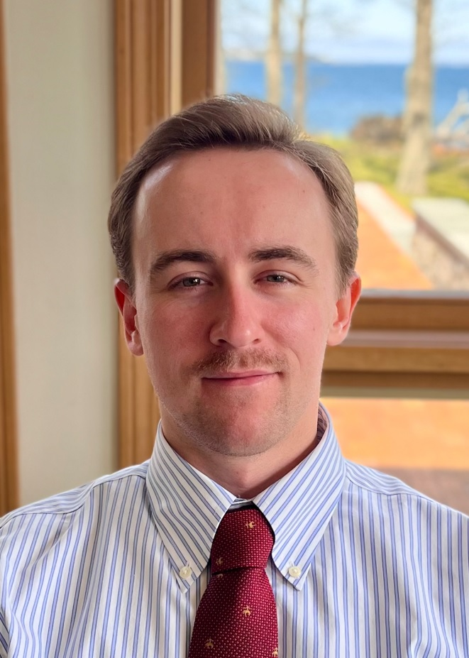

Elliot Vosburgh
I have extensive experience in geospatial data analysis and collection, and am particularly experienced in working with LiDAR and multispectral data. Additionally, I am the founder of the Rhode Island Stone Wall Mapping Project. I attended the University of Rhode Island, gaining a Master's degree in environmental science and management in 2024.